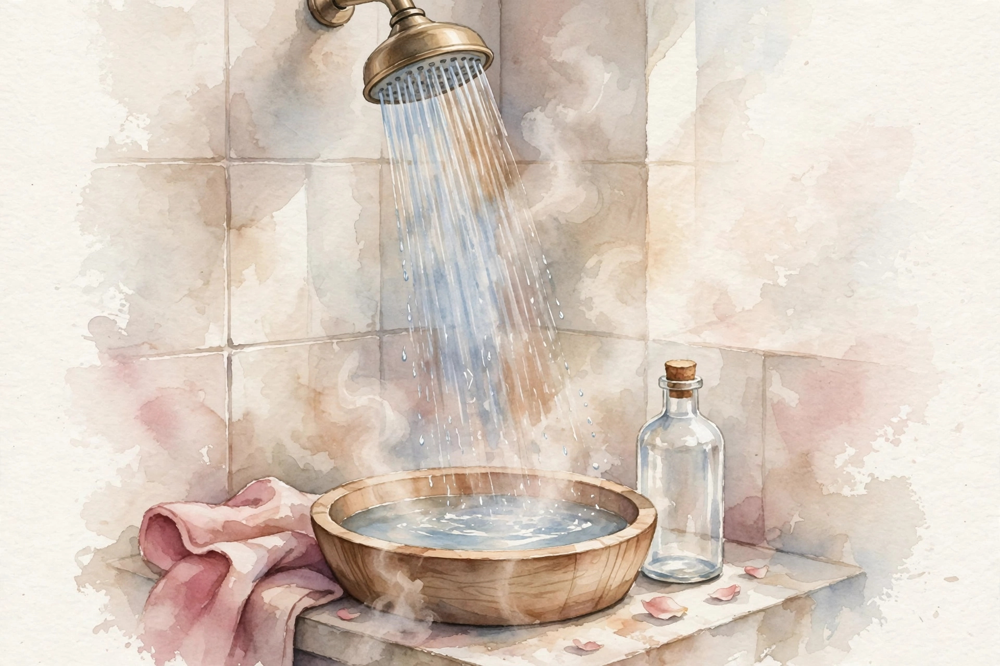
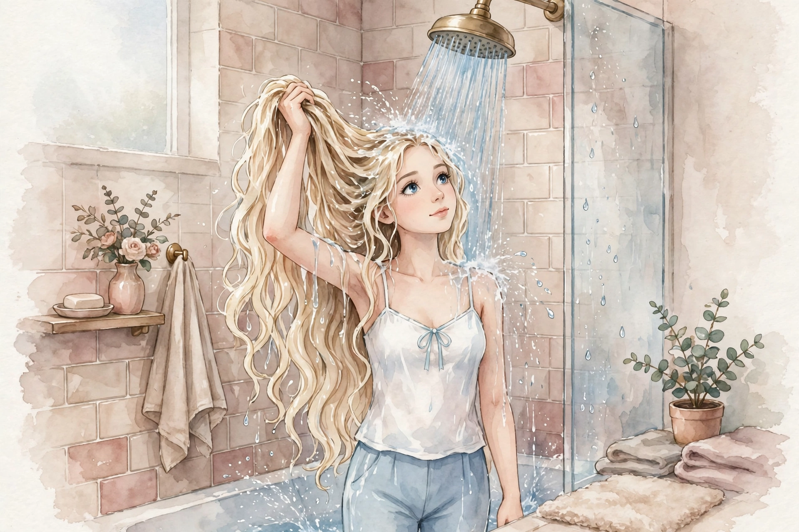

予洗いの時間とお湯の使い方

施術の現場では、シャンプーをつける前の「予洗い」に意外なほど時間をかけます。お客様からは「家ではさっと濡らすだけ」という声もよく聞く工程です。けれども予洗いは、洗髪全体の出来を左右する土台です。この記事では、予洗いの時間とお湯の使い方を整理します。
予洗いの役割は「濡らす」だけではない
予洗いは、髪と頭皮を濡らす工程であると同時に、水で流せる汚れを先に落とす工程でもあります。ほこりや表面についた汚れの多くは、お湯だけでも流れていきます。予洗いが十分だと、シャンプーの泡が全体に行き渡りやすくなり、結果としてシャンプーの量も安定します。
現場の感覚では、予洗いが短いと泡立ちにむらが出やすく、シャンプーを継ぎ足す回数が増えます。逆に、しっかり予洗いした日は、表示どおりの量で足りることが多いです。シャンプーの泡立ちに不満を感じたら、商品を変える前に、まず予洗いを見直す価値があります。
時間の目安と、濡らす順番
時間の目安は、髪の長さにもよりますが、1分から2分ほど、頭皮まで水が通ったと感じるまでがひとつの基準です。濡らす順番は、毛先からではなく頭全体にまんべんなく。シャワーヘッドを頭に近づけ、指で髪を持ち上げながら、内側の頭皮にも水を通していきます。
水が届きにくいのは、耳の後ろと後頭部の内側です。髪の量が多い方は、髪を左右に分けながら水を通すとむらが減ります。お湯の温度は洗髪全体と同じで、熱すぎない温度が基本です。温度の目安については、別記事「洗髪のお湯の温度の目安」でも触れています。
予洗いの終わりは「重さ」で確かめる
予洗いが十分かどうかの目安は、髪全体が水を含んで、しっとりと重くなった感触です。表面だけ濡れて内側が乾いていると、髪は軽く、指を通すと内側がさらさらしています。全体が同じ重さに感じられたら、シャンプーに進む合図です。
予洗いは地味な工程ですが、ここを丁寧にすると、その後の泡立ち、洗い心地、すすぎのしやすさまでが変わります。泡立ちにむらを感じたら、まず予洗いの時間を延ばしてみてください。それだけで感じ方が変わることは、現場でもよくあります。
予洗いの前に、乾いた髪をブラッシングしておくと、ほこりや抜け毛が先に取れ、予洗いの水が髪全体に回りやすくなります。シャンプー前のブラッシングは、別記事でも紹介している基本の手順です。もつれがある場合は、毛先からほどいてから予洗いに入ってください。濡れてからほどくより、乾いた状態の方が手順は簡単です。
お湯の使い方にも、小さなコツがあります。シャワーを頭から離しすぎると、水が髪の表面を流れて内側に届きにくくなります。シャワーヘッドを近づけ、もう片方の手で髪を持ち上げながら水を通すと、頭皮まで届きやすくなります。水圧が弱い環境では、時間を長めに取ることで補えます。予洗いは、水と時間の使い方で調整する工程です。
予洗いの時間は、季節でも調整します。汗をかく季節は頭皮の汚れも増えるため、予洗いを長めに取る日が増えます。逆に乾燥する季節は、お湯に触れる時間そのものが負担に感じられる方もいるため、温度を少し下げて時間は標準に、といった調整も考えられます。予洗いは「何分」と決めるものではなく、その日の頭皮と相談して決めるものです。シャンプーの前に頭皮を触ってみて、べたつきの感じが強い日は長めに、軽い日は標準に。こうした調整の積み重ねが、自分の目安を作っていきます。施術の現場でも、予洗いの長さはお客様ごとに変えています。
予洗いの出来は、その日の洗髪の記録としても残せます。泡立ちがよかった日は、予洗いに何分かけたかを覚えておくと、次回の目安になります。感覚の記録は、自分の手順を作る材料です。

セラフィナ「予洗いは洗髪の土台。シャンプーの前に、まず水でしっかり準備だね」